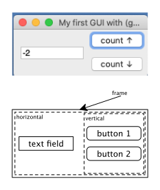

6 Syntax Classes
Goals |
— |
— |
— |
6.1 One Last Thought, Revisited
(define-hello-post-v2 m m)
identifier already defined at: m in: (define-values (m) (string-append "world" ""))
Let’s improve this error message. To do, we first have to explain #:fail-when, another one of syntax-parse’s numerous facilities. The #:fail-when directive checks a condition and, if the condition evaluates to #t, the expander acts as if this clause of syntax-parse had failed and tries the next one. If all clauses fail, it uses the last one with a #:fail-when to create an error message, using the second part of the directive, a string.
(define-syntax (define-hello-post-protected stx) (syntax-parse stx [(_ x-or-x+post ...) #:with ((x p) ...) (map fill-in-option (syntax-e #'(x-or-x+post ...))) #:fail-when ??? "duplicate identifier definition" #'(begin (define x (string-append "world" p)) ...)]))
> (check-duplicates '(a b c)) #f
> (check-duplicates '(a b c a d)) 'a
> (check-duplicates (syntax-e #'(a b c))) #f
> (check-duplicates (syntax-e #'(a b c a d))) #f
> (check-duplicates (syntax-e #'(a b c)) free-identifier=?) #f
> (check-duplicates (syntax-e #'(a b c a d)) free-identifier=?) #<syntax:eval:95:0 a>
> (define-syntax (define-hello-post-protected stx) (syntax-parse stx [(_ x-or-x+post ...) #:with ((x p) ...) (map fill-in-option (syntax-e #'(x-or-x+post ...))) #:fail-when (check-duplicates (syntax-e #'(x ...)) free-identifier=?) "duplicate identifier found" #'(begin (define x (string-append "world" p)) ...)]))
(define-hello-post-protected m m)
unsaved editor:22.0: : #(680 1) define-hello-post-protected: duplicate identifier definition at: m in: (define-hello-post-protected m m)))
6.2 Classy Syntax
syntax patterns, which introduce the surface syntax in a manner that is quite analogous to conventional BNF grammars of language definitions;
syntax templates, which rewrite the surface syntax into syntax that the expander (or compiler) can deal with; and
additional processing steps.
when you write a macro, annotate the pattern variables where possible.
6.3 Defining Syntax Classes
Although the built-in syntax classes (e.g. id and expr/c) are useful, it is sometimes necessary to define your own syntax classes. For example, the define-hello macro demands that all given identifiers are distinct. Our goal is to specify this constraint with a syntax class inside the syntax pattern. There is no built-in syntax class, however, that expresses this constraint, meaning we need to define one.
(define-hello u v w)
(define-syntax (define-hello-unique stx) (syntax-parse stx [(_ . (~var xs distinct-ids)) _ _ _]))
(define-syntax (define-hello-unique stx) (syntax-parse stx [(_ . (~var xs distinct-ids)) #:with (x ...) #'xs #'(begin (define x "world") ...)]))
"distinct-ids-sc.rkt"
#lang racket (provide ; the syntax class matches a sequence of identifiers and ; ensures that they are pairwise distinct as free identifiers distinct-ids) ; - - - - - - - - - - - - - - - - - - - - - - - - - - - - - - - - - (require syntax/parse) ; - - - - - - - - - - - - - - - - - - - - - - - - - - - - - - - - - ; Syntax -> Syntax or #f ; return an ID that occurs twice in the underlying list, if any (define (exists-duplicate stx) (check-duplicates (syntax-e stx) free-identifier=?)) (define-syntax-class distinct-ids [pattern ((~var x id) ...) #:fail-when (exists-duplicate #'(x ...)) "duplicate identifier found"])
A syntax class must exist by the time a macro is compiled. Hence it must be defined at compile time. The point of a syntax class is to refine syntax pattern via a combination of patterns and conditions. Hence a syntax class is just a collection of patterns, introduced by the keyword pattern.
Consider the particular case of distinct-ids. If xs represents an entire sequence of identifiers, the syntax pattern in a syntax class must ensure two constraints. First, xs must match a list-of-identifiers pattern. Second, we need apply check-duplicates to this list. In short, the syntax class is the essence of the syntactic check in the preceding section.
Figure 7 shows a module that defines this syntax class. Note how it requires syntax/parse for the run time of this module. It also defines the exported syntax class, distinct-ids, and exists-duplicate, its auxiliary function, for the same execution phase. To use this syntax class, though, it is necessary to require the module at compile time, that is, with for/syntax.
(simple-for/list3 ([s (list "Rickard" "Brandon")] [i (list 1 2)]) (string-append (number->string i) ". Burnt" s))
(define-syntax (robust-for/list* stx) (syntax-parse stx [(_ ([elem-name a-list] ...) computation) #:with (~var ids distinct-ids) #'(elem-name ...) #:with (list-name ...) (generate-temporaries #'(elem-name ...)) #'(letrec ([iteration (λ (elem-name ...) computation)] [looping (λ (list-name ...) (cond [(or (empty? list-name) ...) '()] [else (cons (iteration (first list-name) ...) (looping (rest list-name) ...))]))]) (looping a-list ...))]))
> (robust-for/list* ((x '()) (x '())) x)
robust-for/list*: duplicate identifier found
at: x
in: (robust-for/list* ((x (quote ())) (x (quote ()))) x)
parsing context:
while parsing distinct-ids
term: (x x)
location: eval:98.0
6.4 Synthesis in Syntax Classes
If you think we’re done with define-hello, you have overlooked at least one option: the optional postfix string variant, you know the one from the very beginning of this chapter. While define-hello-unique is protected with the distinct-ids syntax class against the accidental duplicate identifier, its postfix cousin implements the protection via manual list processing. You might think that this manual approach is necessary because the clauses of define-hello-post are non-uniform and because we eventually need to pair each identifier with some default postfix anyways, but syntax classes are powerful enough to cope with both aspects.
Beyond specifying the properties of syntax objects, syntax classes can also synthesize pieces of code as they check properties. For example, we can define a syntax class that checks for distinctness of a sequence of identifiers with optional “initializers” and pairs identifiers with a default expression if they don’t come with an initializer.
This power is due to syntax-class attributes. Roughly speaking, an attribute is like a field in a regular class. It may be declared with either #:with, which you already know, or #:attr, which explicitly introduces attributes. Syntactically #:attr is like #:with; semantically they differ. While #:with matches a pattern variable and (implicitly if necessary) turns the right-hand side into syntax, an #:attr can stand for any value, not just syntax.
Referencing the values of attributes is like referencing fields in an object. You may remember robust-for/list2 from the preceding chapter and the brief allusion to attributes in its context. The expression a-list.c in this macro extracts the value of attribute c (short for contract) from the application of the expr/c syntax class to a-list.
"optionally-postfixed-sc.rkt"
#lang racket (provide ; the syntax class matches a sequence of identifiers that may ; come with initializers; attributes: ; – ids* : the sequence of identifiers ; – post* : the sequence of initializers optionally-postfixed) ; - - - - - - - - - - - - - - - - - - - - - - - - - - - - - - - - - (require syntax/parse) (require "distinct-ids-sc.rkt") ; - - - - - - - - - - - - - - - - - - - - - - - - - - - - - - - - - (define-syntax-class (optionally-postfixed default) (pattern ((~var x+optional (id-or-id+post default)) ...) #:with (~var ids* distinct-ids) #'(x+optional.id ...) #:attr post* #'(x+optional.post ...))) (define-syntax-class (id-or-id+post default) (pattern (~var x id) #:attr id #'x #:attr post default) (pattern ((~var x id) (~var s str)) #:attr id #'x #:attr post #'s)) Figure 8: Syntax Class: Sequence of Optionally, Distinct Identifiers
For the specific case of optionally postfixed identifiers, we should also learn how to define parameterized syntax classes. The case of expr/c shows how useful parameters are, and in the case of optionally postfixed identifiers, the syntax class should consume the default expression.
(define-syntax-class (optionally-postfixed default) [pattern ((~var x-or-x+post other-sc) ...) ???])
(define-syntax-class id-or-id+post (pattern (~var x id) #:attr id #'x #:attr post #'"") (pattern ((~var x id) (~var s str)) #:attr id #'x #:attr post #'s))
With this auxiliary syntax class in hand, we can easily complete the one for sequences. First, the pattern must use (id-or-id+post default) so as to pass on its parameter to the auxiliary syntax class. Second, by annotating the pattern variable with the auxiliary syntax class we get two attributes for each identifier in the sequence x ...: its actual identifier and the associated postfix string. We can extract the former into a sequence and annotate it with distinct-ids, the syntax class for checking distinctness of identifiers. At this point, we know the sequence of identifiers and that they are pairwise distinct. If we also create a sequence of postfix strings as an attribute, macros can use the two sequences instead of using manual extraction functions.
Figure 8 shows the two complete syntax-class definitions. Because these classes are not used in the same module, we can define them without switching to compile time. Similarly, the definition of a syntax class needs to require plain syntax/parse. Of course, we will require this module at compile time because these annotations will be needed to specify constraints on the patterns.
Recall that #:with automatically and implicitly converts the value from its right-hand side to a syntax object, while #:attr just sets the field to whatever value the expression yields.
As for the definition of optionally-postfixed, the most noteworthy point is the attribute specification. The ids* attribute is specified via #:with to be the list of id attributes of each element of the matched sequence; we use #:with so that we can also annotate the variable with the (re-used) distinct-ids syntax class to guarantee the distinctiveness constraint. In contrast, the post* attribute is set to the (syntax) sequence of initializers via #:attr.
(define-syntax (define-hello-protected-v2 stx) (syntax-parse stx [(_ . (~var xs (optionally-postfixed #'""))) #:with (x ...) #'xs.ids* #:with (p ...) #'xs.post* #'(begin (define x (string-append "world" p)) ...)]))
> (define-syntax (define-hello-protected-v2 stx) (syntax-parse stx [(_ ~var xs (optionally-postfixed #'"")) #:with (x ...) #'xs.ids* #:with (p ...) #'xs.post* #'(begin (define x (string-append "world" p)) ...)]))
> (define-hello-protected-v2 x (y ", good") (x ", bye"))
define-hello-protected-v2: duplicate identifier found
at: x
in: (define-hello-protected-v2 x (y ", good") (x ", bye"))
parsing context:
while parsing distinct-ids
term: (x y x)
location: eval:100.0
while parsing optionally-postfixed
term: (x (y ", good") (x ", bye"))
location: eval:105.0
(define-syntax (define-hello-protected-v3 stx) (syntax-parse stx [(_ (~optional ((~literal post) (~var s str))) . xs) #:declare xs (optionally-postfixed (if (attribute s) #'s #'"")) #:with (x ...) #'xs.ids* #:with (p ...) #'xs.post* #'(begin (define x (string-append "world" p)) ...)]))
> (define-hello-protected-v3 (post "--different--") u (v ", bye")) > u "world--different--"
> v "world, bye"
> (define-hello-protected-v3 w) > w "world"
Exercise 5. You may have noticed that both "hello" and the postfix string is known at compile time. Experiment with shifting the computation of the initial string to compile time. End
(define-syntax (integer-λ stx) (syntax-parse stx [(_ (~var formals (optionally-postfixed #'0)) body ...) #:with (id ...) #'formals.ids* #:with (val ...) #'formals.post* #'(λ ((id val) ...) body ...)]))
Except that this macro fails. Stop! Look back over the macro definition to see whether you can spot the problem, which is of course in the syntax class.
The problem is str in optionally-postfixed. With this
annotation we force the initial values to be literal strings, but here we
want integers. At this point you might point out that our syntax class is
already parameterized, so adding another parameter—
6.5 Recursive Syntax Classes
Take a look at figure 9. On the left side it displays a small “hello world” style graphical user interface (GUI) with one text field and two buttons. The text field displays an integer. Clicking the button at the top increases the counter while clicking the bottom button decreases the counter. On the right side, figure 9 shows the entire core logic of this GUI and the bridge to the “view” code: a counter variable, two callback functions, and a function for propagating changes to the model back to the GUI.
the model
the graphical user interface

; state variable (define *c 0) ; Button Event -> Void ; react to "↑" button (define (↑ b e) (set! *c (+ *c 1)) (propagate)) ; Button Event -> Void ; react to "↓" button (define (↓ b e) (set! *c (- *c 1)) (propagate)) ; -> Void ; propagate changes to view (define (propagate) (send display set-value (~a *c)))
Figure 9 also comes with a diagram below the screenshot. This
diagram explains the typical hierarchical organization of the code that
realizes the GUI. Roughly speaking, the GUI code creates a top-level frame
and, for the arrangement of the actual widgets (text fields, buttons), it
nests horizontal and vertical panes inside this frame. In this particular
example, the outermost pane arranges its elements horizontally. Here the
elements in the horizontal pane are a plain text field and a vertical
pane. The latter stacks the two buttons—
the definition of frame sets up the top-level, displayable window;
the hp and vp panes are the two sub-windows mentioned above;
the text field is named display, and its container is the horizontal pane hp;
the last two definitions inject the buttons into the GUI’s, and their respective container is the vertical pane vp.
What connects the core logic to this view is the display text field, which the propagate function in figure 9 uses to show the new state of the *count variable. Conversely, the callback functions b-↑ and b-↓ push information (about events) from the GUI code to the core logic. The bottom of the left column finally shows how to launch this GUI program: the first line properly initializes the state of the view based on the state of *count and the second line pops up the top-most window.
A second look reveals just how many programming patterns a developer must use to set up this code. The code must introduce the names frame, vp, and hp to create the containment structure. The other half of this setup is the use of these names. Every sub-window and widget instantiation must explicitly specify the parent container. Although a reader can eventually figure out how this code maps to a diagram such as the one in figure 9, it is hard because the nesting organization of the diagram is not reflected in the code. Lastly, the last line of the launch code is also a boilerplate line that almost always comes with such programs.
the view, with programming patterns
with the view language extension
(define frame (new frame% [label "A Plain View"])) (define hp (new horizontal-pane% [parent frame])) (define display (new text-field% [parent hp] [label ""])) (define vp (new vertical-pane% [parent hp])) (define b-↑ (new button% [parent vp] [label "count ↑"] [callback ↑])) (define b-↓ (new button% [parent vp] [label "count ↓"] [callback ↓])) ; initialize view (propagate) ; show view (send frame show #t)
(view "My first GUI with (view ...)" (propagate) (#:horizontal (#:id display text-field% [label ""]) (#:vertical (button% [label "count ↑"] [callback ↑]) (button% [label "count ↓"] [callback ↓]))))
When we notice such pervasive programming patterns, it is time to design a language extension that eliminates them. The right-hand side of figure 10 shows such a design. The view form specifies a title, the initialization expression, followed by a specification of the nesting arrangement of the GUI elements. This specification clearly expresses that the outermost pane is horizontal one and that it contains a plain text field and a vertical pane. The latter clearly contains two stacked buttons, which use the same callbacks as those of the ordinary code.
The specification of basic GUI widgets—
(view string-valued-expression init-expression GUI-Element)
Its meaning is also relatively easy to grasp. A view expression first creates a hierarchical GUI from the title string and the GUI-Element specification. To this end, it instantiates Racket’s frame% class with the title and some other default values. Once the GUI is created, it evaluates the init-expression to initialize the widgets. And finally it sends the frame a show message.
To turn this macro into a language extension, we need to make it robust. Checking the nature of the first two sub-forms is easy; they must match a (~var x expr) pattern and the matching will associate x with the relevant syntax sub-tree. To check that the GUI-Element is well formed, we need a new syntax class. Since we would certainly like view to deal with any arbitrary hierarchical nesting of panes, designing this syntax class appears to be a non-trivial task.
; A GUI Element (GE) is one of: ; – (#:horizontal GE ...) ; – (#:vertical GE ...) ; – (#:id identifier widget-expression [init-field init-expression] ...) ; – (widget-expression [init-field expression] ...)
(define-syntax-class gui-element #:description "gui element specification" (pattern (#:horizontal ge ...) #:declare ge gui-element) (pattern (#:vertical ge ...) #:declare ge gui-element) (pattern ((~optional (~seq #:id (~var x id))) (~var widget% expr) (~var i inits)))) (define-syntax-class inits #:description "name and value binding" (pattern [(x (~var e expr)) ...] #:with (~var ids* distinct-ids) #'(x ...)))
(#:id identifier expression [identifier expression] ...)
(expression [identifier expression] ...)
(define-syntax (view stx) (syntax-parse stx [(_ title:expr initialize:expr (~var visuals gui-element)) #'(begin (define frame (new frame% [label title] [width 200] [height 80])) ??? initialize (send frame show #t))]))
the creation of a top-level window, named frame,
a yet-to-be-determined piece of code that creates the GUI widgets,
the initialize expression, and
the command to pop up the top-level window.
(define-syntax (view stx) (syntax-parse stx [(_ (~var title expr) (~var initialize expr) visuals) #:declare visuals (gui-element #'frame) #'(begin (define frame (new frame% [label title] [width 200] [height 80])) visuals.code initialize (send frame show #t))])) (define ((mk-pane pane%) container) (new pane% [parent container])) (define mk-vertical (mk-pane vertical-pane%)) (define mk-horizontal (mk-pane horizontal-pane%))
To generate the code for the GUI element, we combine two properties of syntax classes: parameterization and synthesis. The first means we define a parameterized syntax class, the second one that a syntax class can truly synthesize code. While Synthesis in Syntax Classes shows how a syntax class can synthesize a list of expressions by extracting it from the input, gui-element must instead compose defines and new expressions.
(#:horizontal ge1 ge2 ge3)
In this case, the generated code must instantiate a horizontal pane, which in turn becomes the container for ge1, ge2, and ge3. These three GUI elements could be atomic widgets or other composites, but their parent must be horizontal, the newly created pane:(begin (define horizontal (new horizontal-pane% [parent ???])) ; the parent of the following is vertical ge1 ge2 ge3) The arrangement of these elements in a begin means (1) that they will be spliced into the surrounding context and (2) that view must be situated in a definition context.(#:vertical ge1 ge2 ge3)
This case is analogous to the previous one:(begin (define vertical (new vertical-pane% [parent ???])) ; the parent of the following is vertical ge1 ge2 ge3) The remaining open question is now obviously how to replace ??? with the parent specified in the context, that is, either as frame (defined via view itself) or a pane defined in the context.(#:id my-button button% [label "down"] [callback cb])
In this case the generated code must define my-button and its value must be a button object whose initial parameters are (the required) label and callback:The parent is again left open for now.(button% [label "down"] [callback cb])
Following the previous case, view could generate this definition:If the view specification contains several clauses without #:id part, the various some-name identifiers must not conflict with each other.Since we don’t need to name the button, you might have thought that generating just the new expression might work:(new button% [parent ???][label "down"][callback cb])
When the generated code gets evaluated, though, all these values will show up and users may not wish to see them. If we were to go this route, we would at least wrap it with (void _ _).For now, we go with the first option here to motivate some of the following chapters.
we parameterize gui-element over the parent value.
(#:horizontal ge1 ge2 ge3)
(gui-element #'horizontal)
(define-syntax-class (gui-element p) #:description "gui element specification" (pattern (#:horizontal ge ...) #:declare ge (gui-element #'horizontal) #:with code #`(begin (define horizontal (mk-horizontal #,p)) ge.code ...)) (pattern (#:vertical ge ...) #:declare ge (gui-element #'vertical) #:with code #`(begin (define vertical (mk-vertical #,p)) ge.code ...)) (pattern ((~optional (~seq #:id (~var x id))) (~var widget% expr) . (~var i inits)) #:with (y) (generate-temporaries #'(hidden)) #:with z #'(~? x y) #:with code #`(define z (new widget% [parent #,p] . i)))) (define-syntax-class inits #:description "name and value binding" (pattern [(x (~var e expr)) ...] #:with (~var ids* distinct-ids) #'(x ...)))
The first two patterns do not generate new expressions to create the respective panes. Instead they defer to two run-time functions that come with the language extension.
The last pattern uses the dotted syntax pattern to name and check the initial fields for atomic GUI widgets. The straightforward definition of the inits syntax class can be found at the end of the figure.
For the case when the #:id option is missing, the same pattern uses the library function generate-temporaries to generate the “hidden” identifier for the definition. This function consumes a sequence of syntaxes and produces a list of unique identifiers, one per element in the given list. Here we need a single distinct identifier; hence we give it a made-up list with one element and match it with a syntax pattern of a one-element list, (y).
The second #:with clauses matches the syntax-pattern variable z with x if the #:id clause is present or the newly created identifier y otherwise. Finally the code attribute uses z for the definition.
6.5.1 Context
> (define-syntax (view2 stx) (syntax-parse stx [(_ a b c) #'(begin (define horizontal 'x) (define z1 `(,a ,horizontal)) (define z2 `(,b ,horizontal)) (define z3 `(,c ,horizontal)))]))
> (view2 0 1 2)
(define-syntax (view stx) (syntax-parse stx [(_ title:expr initialize:expr (~var visuals (gui-element #'frame-name))) #:fail-when (eq? (syntax-local-context) 'expression) "must be used in a definition context" #'(begin (define frame-name (new frame% [label title] [width 200] [height 80])) visuals.code initialize (send frame-name show #t))]))
At this point, we have the right to call view a language extension.
Issues
Let’s briefly reflect on some of the issues that we encountered in this
section. First, we use a syntax class to generate code. The parameter of
the syntax class becomes a part of this generated code, and morally
speaking, it plays the role of an accumulator. The question you may wish to
ask is why we use a syntax class—
Second, in this section, we generate new identifier names, that is, it is the first time that we worry about name clashes. Stop! Delete the respective #:with clause and check what happens with our sample view use. Scope and Hygiene takes a close look at this issue, because it is critical when programmers write language extensions, which are really programs that generates code.
Finally, the view language extension suggests another macro,
namely one that automatically—